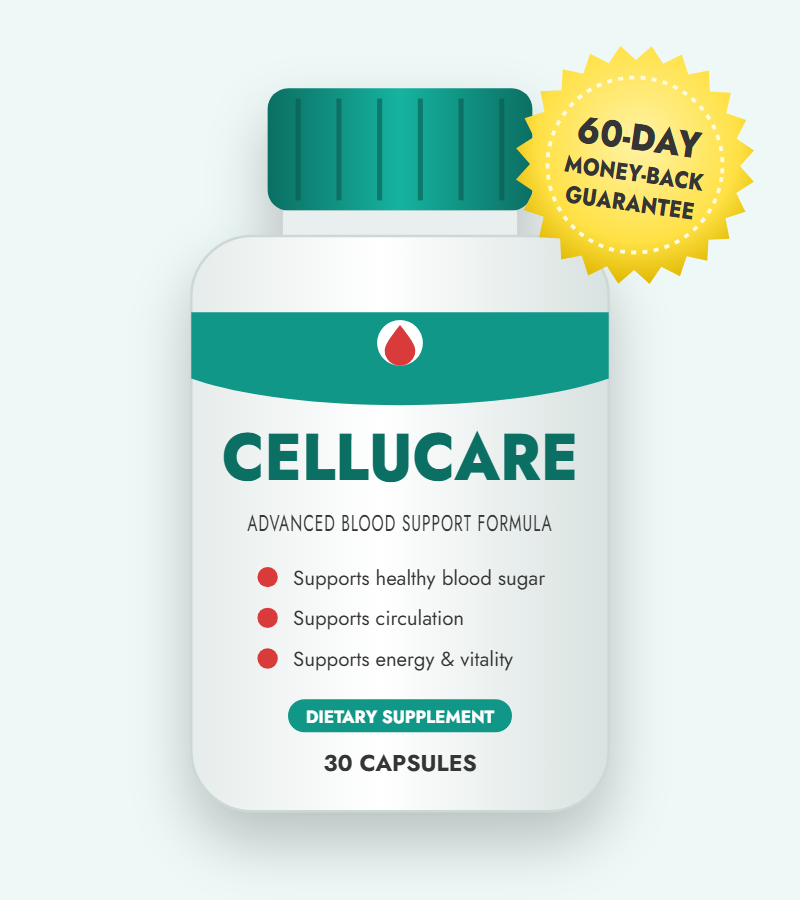
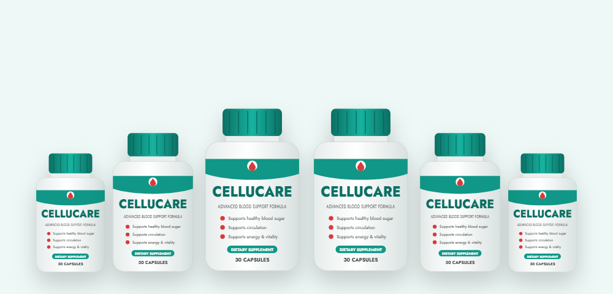

Supports Glucose Balance
Gymnema and banaba leaf contain compounds studied for helping cells use glucose and for moderating how sugar is absorbed after meals.*
An honest look at CelluCare's ingredients, results, side effects and the official website

CelluCare (also searched as Cellu Care) is a once-a-day capsule that combines plant extracts to support healthy blood sugar, better circulation and steady energy. In these CelluCare reviews we explain what's inside each capsule, how it's meant to work, who should be careful, the current CelluCare price and discount packages, and how to order safely from the official website.
It's a dietary supplement in capsule form, made for adults who want extra support for healthy blood sugar levels and steady energy through the day. Each bottle lasts about a month, and you take just one capsule a day.
The formula is built around plant extracts that have long been used in traditional herbal practice and that researchers continue to study for their effects on glucose metabolism and blood flow. According to the official website, every capsule contains more than 12 ingredients. The sales page names eight of them: turmeric, cocoa bean extract, eleuthero, gymnema, juniper berry, pine bark extract, banaba leaf and butcher's broom.
What sets this formula apart from many single-ingredient products is that it targets several things at once: blood sugar balance, circulation and everyday fatigue. That combination makes it popular with people who notice energy dips after meals or who want to look after their cardiovascular health as they get older.
It's important to set the right expectations. This is a supplement, not a medicine. It isn't meant to diagnose, treat or replace care for diabetes or any other condition, and it works best alongside balanced meals, regular activity and enough sleep.
The formula supports the body in three connected ways.*
Gymnema and banaba leaf contain compounds studied for helping cells use glucose and for moderating how sugar is absorbed after meals.*
Cocoa flavanols, pine bark extract and butcher's broom are linked to healthy blood vessels and blood flow, which matters for overall metabolic health.*
Eleuthero, an adaptogenic root, and antioxidant-rich turmeric and juniper are included to support energy and help the body cope with daily stress.*
When blood sugar rises and falls sharply, many people feel tired, foggy or hungry soon after eating. By supporting more even glucose levels and healthy circulation together, the formula aims to make energy feel steadier from morning to evening.
These effects build gradually. The vendor says most users notice a difference after the first week, but recommends taking it consistently for about three months for the best results — which is why the 3- and 6-bottle packages are the most popular.
Here are the eight ingredients named on the official sales page and what research says about each.
Turmeric's active compound, curcumin, has been widely studied for its antioxidant and anti-inflammatory effects, and some studies suggest it may support healthy glucose metabolism.*
Cocoa is rich in flavanols, plant compounds studied for supporting healthy blood vessel function and circulation.*
Also called Siberian ginseng, eleuthero is an adaptogen traditionally used to fight fatigue and support stamina during stressful periods.*
Gymnema has been studied for supporting healthy blood sugar and for reducing the taste of sweetness, which may help curb sugar cravings.*
Juniper berries provide antioxidants and have a long history in traditional herbal practice for supporting overall wellness.*
Pine bark extract contains procyanidins and has been studied for supporting healthy circulation, blood vessel function and a balanced inflammation response.*
Banaba contains corosolic acid, a compound researched for its role in helping cells take up glucose more efficiently.*
A traditional herb used to support healthy veins and circulation, especially in the legs.*
The official website says CelluCare contains more than 12 ingredients but doesn't list every one or the exact amounts. Check the supplement facts label on your bottle for the full formula.
Based on its ingredients, these are the main benefits the formula is designed to support.*
Gymnema, banaba and turmeric support balanced glucose levels as part of a healthy diet.*
Cocoa, pine bark and butcher's broom support healthy blood vessels and blood flow.*
More even blood sugar and adaptogenic eleuthero may help reduce afternoon slumps.*
Gymnema may dull the taste of sweets, making it easier to cut back on sugary snacks.*
Turmeric, juniper and pine bark provide antioxidants that help protect cells from everyday stress.*
Just one capsule a day with dinner — no powders, shakes or complicated plans.
Taking it is simple. Following the official directions:
If you check your blood sugar at home, keep doing so as your doctor advises and share any changes with them. Store the bottle in a cool, dry place.
The formula is made from plant extracts, and most healthy adults tolerate ingredients like these well. Still, active botanicals can cause side effects or interact with medicines. Here's what to know:
Stop taking it and contact your doctor if you feel shaky, dizzy, unusually tired or notice any other unusual reaction.
The FDA does not approve dietary supplements, so be cautious of any website that claims a supplement is "FDA approved."
We looked at the formula, price, guarantee and what CelluCare reviews and ads claim. Here's our honest take.
It's a reasonable choice for healthy adults who want one daily capsule to support balanced blood sugar, circulation and energy. The ingredient list is built on familiar, studied botanicals, the price is in line with similar formulas, and the 60-day guarantee lowers the risk of trying it. It isn't a replacement for diabetes treatment, and anyone on medication should check with a doctor first. If you decide to try it, order from the official website to get the genuine product and the guarantee.
Visit the CelluCare Official WebsiteHow the CelluCare supplement compares with common alternatives for blood sugar support.
| Option | What it does | Typical cost | Main downside |
|---|---|---|---|
| CelluCare | Plant blend for blood sugar, circulation and energy | $49–$79 per month | No trial on the full formula; medicine interactions |
| Single herbs (e.g. cinnamon, berberine) | One ingredient for glucose support | $10–$30 per month | Narrower effect; quality varies |
| Diet & exercise changes | Lower-carb meals, walking after meals | Free to low cost | Takes time and consistency |
| Prescription medicine | Medically proven glucose control | Varies with insurance | Needs a doctor; possible side effects |
Supplements are not a substitute for prescribed treatment. If you have diabetes or prediabetes, work with your doctor on the right plan.
Search for "CelluCare official" and you'll find many sites that all claim to be the official store. Most are third-party pages with similar names, and some list prices, guarantees or ingredients that don't match the real product. Here's how to make sure you're buying the genuine product:
For the full guarantee and the best CelluCare discount, order from the CelluCare official website.
Each bottle is about a 30-day supply. The more bottles you buy, the bigger the CelluCare discount — and every order has the 60-day guarantee.
60-Day Supply · 2 Bottles
$79/bottle
List $358 · Save $200
180-Day Supply
$49/bottle
List $1,074 · Save $780
90-Day Supply · Most Popular
$69/bottle
List $537 · Save $330
Prices checked on the official website on October 16, 2026 and may change. The two free digital guides with 3- and 6-bottle orders are "Learn How to Manage Type 2 Diabetes" and "The Ultimate Tea Remedies." One-time payment — no subscription.
The best way to buy CelluCare is through the official website, which offers the discount packages, free shipping on larger orders and the 60-day guarantee. Here's how to order CelluCare:

Every order from the official website is covered by a 60-day money-back guarantee from the date of purchase.
If you're not happy with the product or your results, contact the vendor by phone or email within 60 days and return the bottles — even empty ones. According to the vendor, refunds are issued within 48 hours of the return arriving, minus shipping and handling.
Keep your order confirmation email, and don't wait until the last few days to start a return. The guarantee only covers orders placed on the official website.
Try CelluCare Risk-FreeCelluCare is a once-daily capsule supplement designed to support healthy blood sugar levels, circulation and everyday energy. The official website says each capsule contains more than 12 ingredients, including turmeric, cocoa bean extract, eleuthero, gymnema, juniper berry, pine bark extract, banaba leaf and butcher's broom.
Several CelluCare ingredients, such as gymnema, banaba and pine bark extract, have been studied for blood sugar and circulation, but the finished CelluCare formula has not been tested in a published clinical trial. Results vary from person to person and are best when the supplement is combined with a balanced diet and regular activity.
The official CelluCare order page is on getcellucare.com. Many other sites with similar names call themselves the official website; orders from them may not include the 60-day money-back guarantee or the real bundle prices.
On the official website it costs $79 per bottle for 2 bottles ($158 plus shipping), $69 per bottle for 3 bottles ($207 with free US shipping) and $49 per bottle for 6 bottles ($294 with free US shipping). Each bottle lasts about 30 days.
Yes. The biggest CelluCare discount is on the 6-bottle package, which brings the price down to $49 per bottle and adds free US shipping and two free digital guides. The 3-bottle package also includes free shipping and the two guides.
The official directions are to take one CelluCare capsule a day with your evening meal and half a glass of water. Do not take more than the label recommends.
Most people tolerate plant-based supplements like CelluCare well, but mild stomach upset is possible. Gymnema and banaba can lower blood sugar, and turmeric and pine bark may affect blood clotting, so talk to your doctor first if you take diabetes, blood pressure or blood-thinning medication, or if you are pregnant or nursing.
The safest way to buy CelluCare is through the official website, where you get the genuine product, the bundle prices and the 60-day money-back guarantee. CelluCare listings on Amazon and other marketplaces come from third-party sellers.
To order CelluCare, choose a 2, 3 or 6-bottle package on the official website, enter your details on the secure checkout page and pay once. Orders usually ship within one business day and arrive in 5 to 10 days within the US.
No. CelluCare is a one-time payment for the package you choose. There is no auto-ship or recurring charge.
CelluCare comes with a 60-day money-back guarantee from the date of purchase. If you are not satisfied, contact the vendor and return the bottles, even empty ones, within 60 days for a refund of the purchase price minus shipping and handling.
The product is called CelluCare (sometimes written CELLUCARE). People often search for it as Cellu Care, but it is the same blood sugar support supplement.
Get CelluCare for as little as $49 per bottle with free US shipping on the 6-bottle package — backed by a 60-day money-back guarantee.
Buy CelluCare from the Official Website